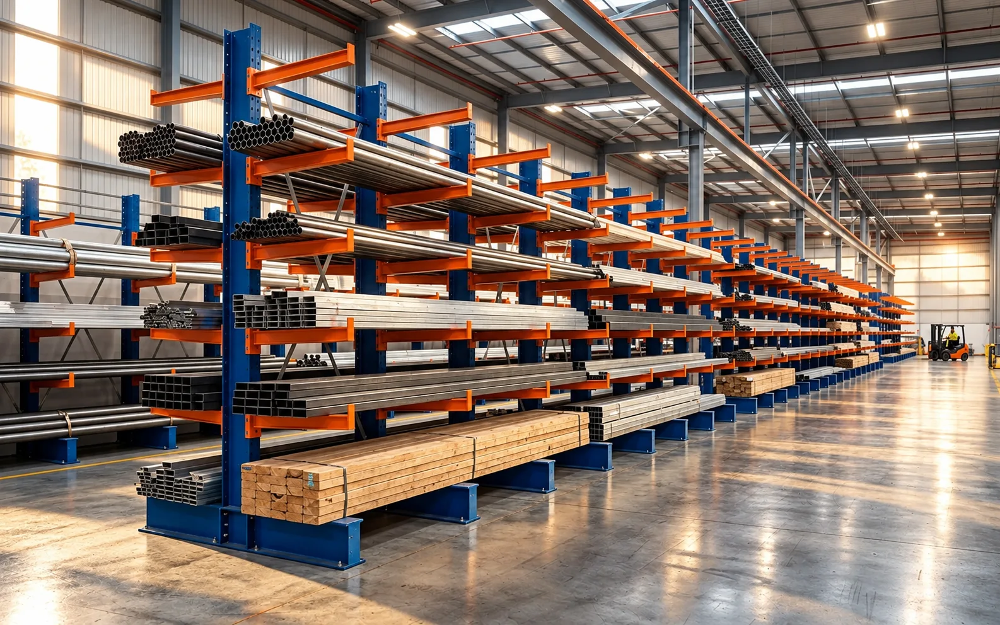

Cantilever Racking
Cantilever racking stores long and irregular goods such as pipes, steel sections, timber and PVC on arms that project from vertical columns, with no front uprights in the way. ProRack cantilever arms are designed for 250 kg to 2,500 kg and more per arm.
At a glance
Cantilever Racking specifications
| Arm capacity | 250 kg to 2,500 kg and more per arm |
|---|---|
| Configuration | Single-sided against a wall or double-sided in the centre |
| Access | Open front with no front uprights |
| Best for | Steel pipes, extruded aluminium, timber, PVC conduit, coils |
| Design codes | EN 15512, IS 800 and IS 1893 seismic checks |
| Manufactured in | Hyderabad, Telangana, India; installed across India |

How it works
How cantilever racking works
Vertical columns stand on bases, and arms project from the columns to carry the load. With no front uprights, long items can be loaded from the side by forklift, side loader or crane.
Arm length, arm capacity and column spacing are chosen from the longest, heaviest and most flexible item stored, so loads rest on enough arms not to sag.
Is it the right fit?
When to choose cantilever racking
- You store pipes, bars, sections, sheets or timber
- Items are longer than a standard pallet bay
- You need to load with side loaders or cranes
- Item lengths vary
Compare
When another system may fit better
- Selective pallet racking for palletised goods.
- Mezzanine floors to add floor area above storage.
- Wide-aisle racking for mixed pallet storage.
Planning a project
What we need for a quotation
- Project location and expected timeline
- Warehouse dimensions, clear height and column grid
- Pallet or item dimensions and weights
- Number of storage positions required
- Handling equipment in use or planned
- Floor slab details, if available
ProRack reviews the requirement, prepares a layout and structural design in Tekla Structures and RSTAB, manufactures in Hyderabad and installs through SmartFit Solutions. See how we engineer projects.
Questions
Cantilever Racking FAQs
What can be stored on cantilever racking?
Cantilever racking is designed for long, bulky and irregular items such as steel pipes, extruded aluminium, timber, PVC conduit, sheets and coils that do not fit a standard pallet bay.
How much weight can a cantilever arm hold?
ProRack cantilever arms are designed for 250 kg to 2,500 kg and more per arm. The final rating depends on arm length, column section and how the load is spread, and is confirmed by project-specific design.
Should cantilever racking be single-sided or double-sided?
Single-sided cantilever racking stands against a wall and is loaded from one side. Double-sided racking stands in the middle of the floor and is loaded from both sides, giving more capacity per column.
Last updated by the ProRack engineering team.
Discuss your cantilever racking project
Let's make
space work.
Share your layout and load details.
Our engineers will recommend a configuration.